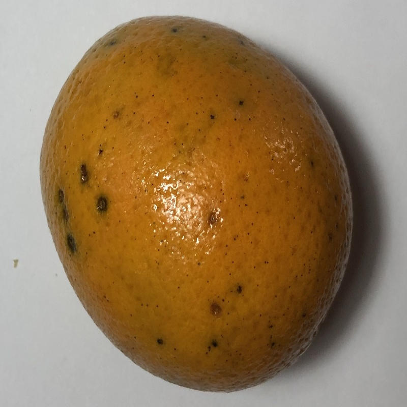
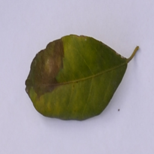

黑斑病
病原：柑橘黑斑病由 柑橘叶点霉菌 引起，是一种常见的柑橘果实病害。
症状：果皮上出现黑色或暗棕色的圆形病斑，中央常有黄色或灰色的坏死区域。严重时，病斑会扩展，导致果实腐烂。
解决办法
预防措施：
- 加强果园管理，及时清除病残体，减少病原滋生的环境。
- 合理修剪树木，增加通风透光。
药物防治：
- 百菌清： 75%可湿性粉剂 600~800 倍液，落花后 1 个半月内，每隔 10-15 天喷施 1 次，连续喷施 2~3 次。
- 多菌灵： 50%可湿性粉剂 600~1000 倍液，落花后 1 个半月内及 6 月下旬至 7 月下旬，每隔 10-15 天喷施 1 次，根据浓度不同，连续喷施 2~3 次。
- 波尔多液： 配比 0.6:1:100，5~7 月份使用，连续喷施 3 次，防治效果良好。
柑橘黑斑病示例

柑橘黑斑病果实

柑橘黑斑病叶片
注：图片仅为示例，实际黑斑病症状可能因病原体种类、环境条件等因素而有所不同。